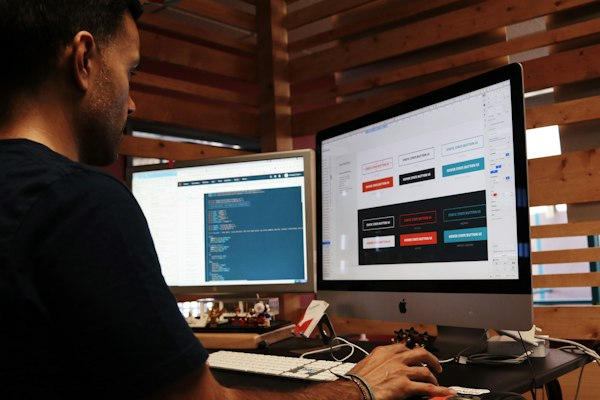

One goal, one offer
Every element either moves somebody towards the single action or gets removed, including the navigation menu that politely invites a visitor to wander off and never return.
You are paying for every click. The ad promises same-day service across the Inner West; the click lands on a homepage with a rotating banner, six service tiles and a phone number down in the footer. The visitor now has to work out where to go next, and most will not bother. The budget keeps spending. The enquiries do not follow. Paid traffic landing on a homepage is money wasted.
Onva Labs builds single-purpose campaign landing pages: one audience, one offer, one action. The headline repeats the promise that earned the click, the form asks only for what you genuinely need, and GA4 conversion tracking is configured so you can see which ad group produced an enquiry. Then we test variations, because a first version is a reasonable hypothesis, never an answer.
Six decisions that separate a page earning its ad spend from one that looks tidy while visitors read the headline and quietly tap back to the search results.
Every element either moves somebody towards the single action or gets removed, including the navigation menu that politely invites a visitor to wander off and never return.

The headline repeats the promise that earned the click, in the same words, so nobody arrives wondering whether they have landed on the right page at all.
Field by field, we cut what you do not need, explain what you do, and match the mobile keyboard to the input, because every extra question costs completions.

Offers, pricing and comparisons are written so they can be backed up, because Australian Consumer Law and ACCC rules treat misleading or deceptive claims seriously.
GA4 and conversion tracking configured and tested before the campaign starts, so you learn which keyword produced a lead instead of guessing from monthly totals.

A/B testing services that alter a single element per test, run it long enough to mean something, keep what won and record what did not work.
Each page is scoped around one audience and one action, which makes it obvious what to test next and what to cut once the first numbers arrive.
Tracking is built and verified before any spend, because a campaign running without working conversion data is simply an expensive opinion about what works.
Offer and pricing claims are checked against Australian Consumer Law, so a promotion does not create a problem that no amount of ad spend can fix.
Pages are built light and tested on mobile connections, since paid clicks arrive mostly on phones and a slow page loses people before the offer is read.
We agree the audience, the single action and what a qualified lead actually looks like.
Headline, offer, proof and form written to match the ad, then laid out mobile first.
Tracking verified, page published, and early traffic watched closely for obvious points of drop-off.
A/B tests run one change at a time, with the winner kept and the reasoning written down.
Three services that decide whether a campaign page earns its budget: the traffic sent to it, the thinking behind it, and how quickly it loads.

The campaigns that send traffic to these pages, managed with the same attention to tracking and what each click actually returns.
View service
Research, wireframes and usability testing for the longer customer journeys a single campaign page cannot carry on its own.
View service
Performance work for campaign pages, because a paid click left waiting on a hero image is a click you have paid for twice.
View serviceWe will not quote one, and figures borrowed from other industries are close to useless for yours. Rates depend on your offer, your price, the audience and how warm the traffic already is. What a campaign page does is remove the obvious reasons people leave, then measure. The useful comparison is your own page last month.
You can, and plenty do. A homepage is built for people who already know you and are browsing around. Paid traffic arrives mid-question with one thing in mind. A campaign page answers that one thing, in the words of the ad, with a single action. The difference usually shows up in cost per enquiry.
Long enough for the result to mean something, which depends on your traffic volume rather than on the calendar. Low-traffic pages need patience, and calling a winner after one good week is how teams talk themselves into things that are not true. We change one element at a time and agree the finish line beforehand.
Tell us what you are advertising and who you are targeting. We will design a page built around that one offer and track what it does.